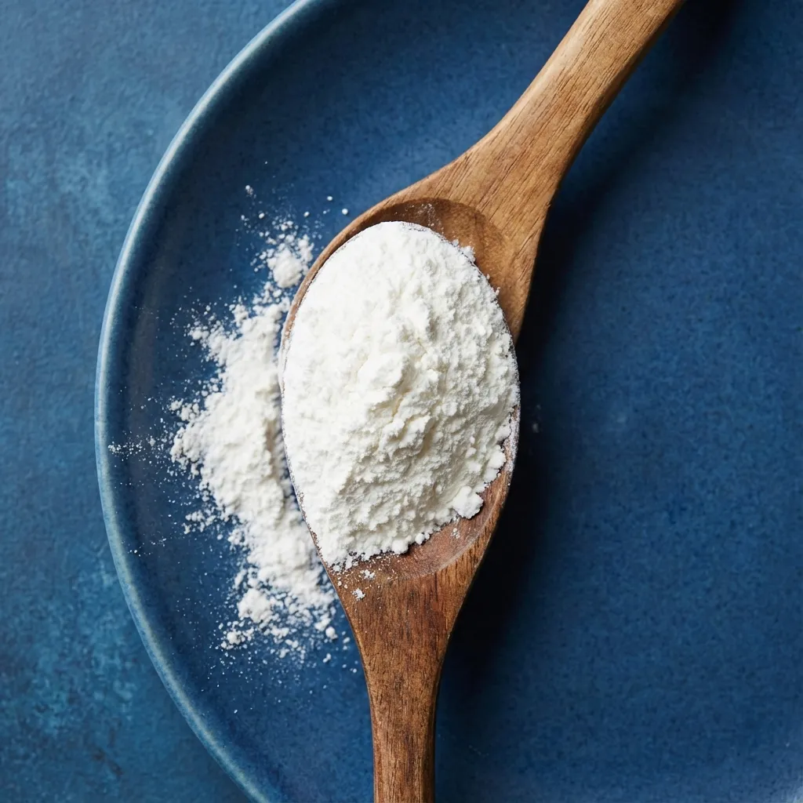
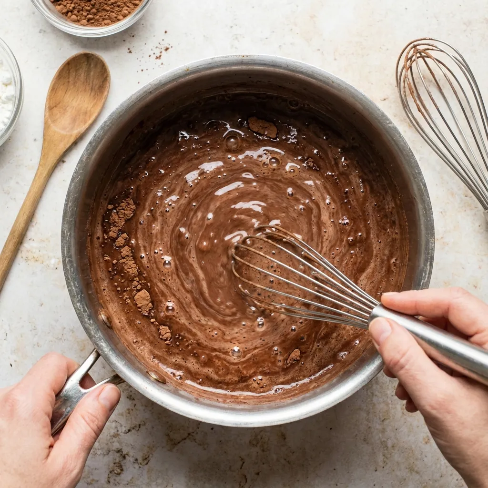
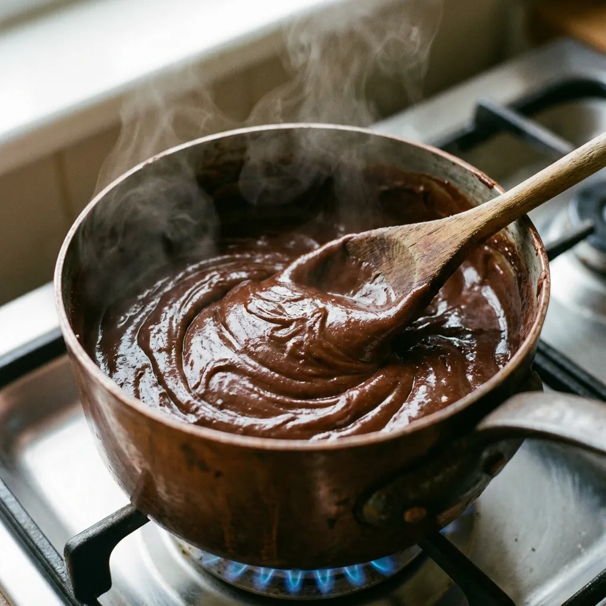

Recetas Saludables con Fécula de Maíz
La fécula de maíz (también conocida como maicena o almidón de maíz) es un ingrediente versátil y naturalmente libre de gluten que transforma por completo la cocina saludable. Este polvo fino y blanco no solo es perfecto para espesar salsas y sopas, sino que permite crear postres deliciosos, snacks crujientes y alternativas bajas en grasa a recetas tradicionales. En esta primera parte, exploraremos dos recetas fundamentales que demuestran el poder de este ingrediente.
¿Qué es la Fécula de Maíz?
La fécula de maíz es el almidón puro extraído del endospermo del grano de maíz mediante un proceso de molienda húmeda. A diferencia de la harina de maíz que incluye todo el grano molido (con fibra, proteína y grasas), la fécula es exclusivamente almidón refinado, lo que la hace ideal para espesar líquidos sin añadir color, sabor ni textura granulosa.

Su capacidad espesante es aproximadamente el doble que la de la harina de trigo, lo que significa que necesitas usar la mitad de cantidad para lograr los mismos resultados. Esto reduce significativamente las calorías en recetas que tradicionalmente requieren grandes cantidades de harina. Además, al ser naturalmente sin gluten, es un salvavidas para personas con enfermedad celíaca, sensibilidad al gluten no celíaca, o quienes simplemente buscan reducir el gluten en su dieta.
Beneficios de la Fécula de Maíz
- 100% sin gluten: Certificada para dietas celíacas estrictas [1]
- Neutra en sabor: No altera el perfil de sabor de tus recetas
- Textura ligera y sedosa: Crea preparaciones suaves sin grumosidad
- Versátil: Funciona en dulces, salados, horneados y salteados
- Digestión fácil: No contiene fibra, ideal para dietas blandas o post-operatorias
- Alta temperatura: Resiste cocción sin descomponerse
Pudding de Chocolate Saludable Sin Azúcar Procesada
Un postre cremoso, decadente y chocolatoso que parece pecado pero es puro bienestar. Este pudding elimina el azúcar refinada, lácteos pesados y conservantes típicos de versiones comerciales, creando un postre nutritivo que incluso puedes disfrutar en el desayuno.
⏱️ Tiempo: Preparación 5 min | Cocción 8 min | Enfriado 2 horas | Total 2h 15min
🍽️ Porciones: 6 porciones individuales
💪 Calorías: 125 kcal por porción | Proteína 3g | Carbohidratos 18g | Grasas 4g
Ingredientes:
- 3 tazas (720ml) de leche de almendras sin azúcar (o leche descremada, leche de avena, coco)
- 4 cucharadas (36g) de fécula de maíz
- 4 cucharadas (24g) de cacao en polvo puro sin azúcar (tipo Hershey's o Valor)
- 4 cucharadas (60ml) de edulcorante líquido (stevia, monk fruit, o eritritol disuelto)
- Alternativamente: 5 cucharadas de miel cruda o sirope de arce para versión con azúcar natural
- 1 cucharadita de extracto puro de vainilla
- 1/4 cucharadita de sal marina fina
- 1/2 cucharadita de canela en polvo (opcional, añade profundidad)
- 50g de chocolate oscuro 85% picado finamente (opcional, para intensidad extra)
- Toppings: fresas frescas, cacao nibs, almendras laminadas, coco rallado
Preparación Paso a Paso:
Paso 1 - Preparar la Mezcla Base: En una cacerola mediana de fondo grueso (preferiblemente antiadherente), tamiza juntos la fécula de maíz y el cacao en polvo usando un colador fino. El tamizado es crítico - elimina grumos antes de comenzar, asegurando un pudding perfectamente sedoso. Añade la sal y canela si la usas. Vierte aproximadamente 1/2 taza de la leche fría y bate vigorosamente con un batidor de alambre hasta obtener una pasta completamente líquida y sin un solo grumo. Esta técnica de "slurry" es el secreto profesional para evitar esos molestos grumos de almidón.

Paso 2 - Incorporar Líquidos Gradualmente: Añade el resto de la leche gradualmente mientras bates constantemente. Una vez todo incorporado, agrega el edulcorante y extracto de vainilla. Bate nuevamente hasta homogeneizar completamente. La mezcla en este punto debe lucir como chocolate con leche líquido, uniforme en color sin vetas de cacao seco. Si ves grumos flotando, cuela toda la mezcla através de un colador fino antes de continuar.
Paso 3 - Cocinar con Paciencia y Atención: Coloca la cacerola a fuego medio (no alto - la paciencia rinde frutos aquí). Comienza a batir suave pero constantemente en movimientos circulares, asegurando raspar el fondo y esquinas donde el almidón tiende a pegarse. Durante los primeros 3-4 minutos, la mezcla permanecerá líquida - no te desesperes. Luego, súbitamente, comenzará a espesar. Cuando notes que se está poniendo más densa, reduce el fuego a medio-bajo y bate más vigorosamente. La mezcla pasará de líquida a consistencia de crema espesa en aproximadamente 30-60 segundos.
Paso 4 - Punto Perfecto de Espesura: Continúa cocinando y batiendo durante 2-3 minutos más una vez que espesó. El pudding está en su punto cuando: 1) Al levantar el batidor, la mezcla cae en forma de cinta gruesa que tarda 2-3 segundos en desaparecer de la superficie, 2) Cubre completamente el dorso de una cuchara de madera sin gotear inmediatamente, 3) Hace burbujas grandes y perezosas al hervir suavemente. No cocines de más o se volverá demasiado firme y gomoso al enfriar.

Paso 5 - Añadir Chocolate (Opcional): Si estás usando chocolate oscuro picado para intensidad extra, retira la cacerola del fuego ahora y añade el chocolate picado. Deja reposar 30 segundos para que el chocolate comience a derretirse con el calor residual, luego bate hasta que esté completamente integrado y la mezcla sea brillante y sedosa. El chocolate oscuro 85% añade complejidad de sabor profunda y antioxidantes adicionales sin añadir mucho azúcar.
Paso 6 - Enfriar Adecuadamente: Tienes dos opciones para servir. Para pudding individual estilo postre elegante, reparte la mezcla caliente en 6 vasitos o copas de postre (vasitos de 150ml aproximadamente). Para pudding familiar en bol grande, vierte en un bol de vidrio de 1 litro. Independientemente del método, presiona film transparente directamente contra la superficie del pudding mientras está caliente - esto evita esa molesta "piel" que se forma al enfriar. Refrigera mínimo 2 horas, idealmente 4 horas o toda la noche para textura óptima.
Paso 7 - Servicio Creativo: Antes de servir, retira el film. Si formó alguna condensación encima, simplemente sécala con papel absorbente. Para presentación elegante, decora cada vasito individualmente con tus toppings favoritos: fresas frescas en rodajas, cacao nibs para crunch amargo, almendras laminadas tostadas, coco rallado, o simplemente un remolino de crema batida (regular o de coco). También puedes crear parfaits en capas alternando pudding con yogur griego y granola.
💡 Variaciones Deliciosas:
- Pudding de chocolate blanco: Reemplaza cacao por 100g de chocolate blanco derretido
- Moca (chocolate-café): Añade 2 cucharaditas de café instantáneo a la mezcla
- Chocolate-naranja: Agrega ralladura de 1 naranja y 1/4 cucharadita de extracto de naranja
- Mexicano: Añade 1/2 cucharadita extra de canela + pizca de cayena
- Chocolate-menta: Sustituye vainilla por extracto de menta (con moderación)
- Proteico: Mezcla 2 scoops de proteína de chocolate una vez enfriado
🥗 Beneficios Nutricionales
Con solo 125 calorías por porción generosa, este pudding casero es una fracción de las 220-280 calorías que contienen los puddings comerciales pre-empacados. Más importante aún, mientras las versiones comerciales típicamente contienen 20-30g de azúcar añadida por porción (casi una semana de azúcar recomendada!), nuestra versión tiene 0g de azúcar refinada cuando usas edulcorantes sin calorías, o solo 8g si usas miel natural.
El cacao puro es extraordinariamente rico en flavonoides antioxidantes que apoyan la salud cardiovascular, mejoran el flujo sanguíneo cerebral (beneficiando concentración y memoria), y pueden reducir la presión arterial [2]. Contiene también magnesio, hierro y fibra. A diferencia de productos con leche entera y crema que pueden tener 12-15g de grasa saturada por porción, usar leche vegetal reduce esto drásticamente a solo 4g de grasas mayormente insaturadas saludables.
Este pudding es también excelente para personas con intolerancias. Es naturalmente libre de gluten, y puede hacerse completamente vegano usando leche vegetal. Padres: es una manera brillante de que los niños consuman cacao saludable sin la montaña de azúcar de productos comerciales, y ni siquiera notarán la diferencia.
Fécula de Maíz vs Otras Harinas
Comparada con harina de trigo todo uso, la fécula de maíz tiene aproximadamente el doble de poder espesante, significando que necesitas usar 50% menos cantidad para lograr la misma consistencia. Esto reduce drásticamente las calorías en salsas, sopas y postres. Sin embargo, a diferencia de harinas integrales, la fécula no aporta proteínas, fibra ni micronutrientes significativos - es almidón puro.
Por esta razón, es mejor usarla estratégicamente para sus fortalezas únicas (espesar, dar crujido en empanizados, crear texturas sedosas en postres) en lugar de reemplazar todas las harinas de tu despensa. Para uso nutricional completo y fibra, combínala con ingredientes densos en nutrientes como hacemos en estas recetas - proteína del pollo, cacao rico en antioxidantes, etc.
Comparada con ingredientes aromáticos como gochugaru, la fécula es completamente neutral, permitiendo que otros sabores brillen. Es el ninja silencioso de tu despensa - hace su trabajo perfectamente sin llamar la atención.
Almacenamiento de Fécula de Maíz
Guarda la fécula de maíz en su envase original bien cerrado o transfiérela a un recipiente hermético de vidrio o plástico grueso. Almacena en tu despensa en un lugar fresco, seco y oscuro, lejos de fuentes de calor y humedad. Correctamente almacenada, la fécula de maíz puede durar indefinidamente - literalmente años - sin perder sus propiedades espesantes.
La única manera de que se eche a perder es si entra humedad, permitiendo crecimiento de moho. Si accidentalmente se humedece, sécala completamente extendida en una bandeja y guárdala en recipiente nuevo limpio. Si desarrolla olor extraño o cambio de color, descártala.
Referencias Científicas
- Rai S, Kaur A, Chopra CS. (2018). "Gluten-Free Products for Celiac Susceptible People". Front Nutr, 5:116. PubMed PMID: 30619866
- Desideri G, et al. (2012). "Benefits in cognitive function, blood pressure, and insulin resistance through cocoa flavanol consumption in elderly subjects with mild cognitive impairment". Hypertension, 60(3):794-801. PubMed PMID: 22892813
💚 Encuentra Fécula de Maíz Orgánica en Amazon
Busca marcas orgánicas certificadas sin GMO para máxima pureza. Las marcas premium aseguran proceso de refinado limpio sin químicos residuales.
Ver Fécula de Maíz en Amazon →
📖 Continúa tu viaje culinario:
🥜 Recetas con Nucita: Proteína vegetal deliciosa
🍫 Chocolates con Almendras: Snacks antioxidantes